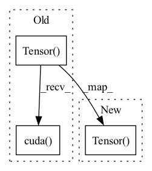

Pattern ID :3095

Before Change
// -------------------------------------------------- //
gt_rpn_loc, gt_rpn_label = self.anchor_target_creator(bbox, anchor)
gt_rpn_loc = torch.Tensor(gt_rpn_loc)
gt_rpn_label = torch.Tensor(gt_rpn_label).long()
if rpn_loc.is_cuda:
gt_rpn_loc = gt_rpn_loc.cuda()
gt_rpn_label = gt_rpn_label.cuda()
// -------------------------------------------------- //
// 分别计算建议框网络的回归损失和分类损失
After Change
// -------------------------------------------------- //
gt_rpn_loc, gt_rpn_label = self.anchor_target_creator(bbox, anchor)
gt_rpn_loc = torch.Tensor(gt_rpn_loc).type_as(rpn_locs)
gt_rpn_label = torch.Tensor(gt_rpn_label).type_as(rpn_locs).long()
// -------------------------------------------------- //
// 分别计算建议框网络的回归损失和分类损失
In pattern: SUPERPATTERN
Frequency: 3
Non-data size: 3
Instances
Fragment ID: 16618696
Project Name: bubbliiiing/faster-rcnn-pytorch
Commit Name: 05e6e50b241e1ae4707e28c3b3fc388fd7141eb4
Time: 2022-04-20
Author: 3323290568@qq.com
File Name: nets/frcnn_training.py
M Class Name: FasterRCNNTrainer
N Class Name: FasterRCNNTrainer
M Method Name: forward(5)
N Method Name: forward(5)
M Parent Class: nn.Module
N Parent Class: nn.Module
M File Name: nets/frcnn_training.py
N File Name: nets/frcnn_training.py
M Start Line: 255
M End Line: 299
N Start Line: 266
N End Line: 286
'>
Before Change
dim_batch = past.size()[0]
zero_padding = torch.zeros(1, dim_batch, self.dim_embedding_key * 2).cuda()
prediction = torch.Tensor().cuda()
present_temp = past[:, -1].unsqueeze(1)
// past temporal encoding
past = torch.transpose(past, 1, 2)
After Change
dim_batch = past.size()[0]
zero_padding = torch.zeros(1, dim_batch, self.dim_embedding_key * 2)
prediction = torch.Tensor()
present_temp = past[:, -1].unsqueeze(1)
if self.use_cuda:
zero_padding = zero_padding.cuda()
prediction = prediction.cuda()
'>
Fragment ID: 16618698
Project Name: marchetz/mantra-cvpr20
Commit Name: a03545f44dd81448146718bbb8b1cbe089d15b8c
Time: 2020-04-30
Author: francescom394@gmail.com
File Name: models/model_controllerMem.py
M Class Name: model_controllerMem
N Class Name: model_controllerMem
M Method Name: forward(3)
N Method Name: forward(3)
M Parent Class: nn.Module
N Parent Class: nn.Module
M File Name: models/model_controllerMem.py
N File Name: models/model_controllerMem.py
M Start Line: 116
M End Line: 118
N Start Line: 119
N End Line: 128
'>
Before Change
dim_batch = past.size()[0]
zero_padding = torch.zeros(1, dim_batch, self.dim_embedding_key * 2).cuda()
prediction = torch.Tensor().cuda()
present = past[:, -1, :2].unsqueeze(1)
// temporal encoding for past
past = torch.transpose(past, 1, 2)
After Change
dim_batch = past.size()[0]
zero_padding = torch.zeros(1, dim_batch, self.dim_embedding_key * 2)
prediction = torch.Tensor()
present = past[:, -1, :2].unsqueeze(1)
if self.use_cuda:
zero_padding = zero_padding.cuda()
prediction = prediction.cuda()
'>
Fragment ID: 16618694
Project Name: marchetz/mantra-cvpr20
Commit Name: a03545f44dd81448146718bbb8b1cbe089d15b8c
Time: 2020-04-30
Author: francescom394@gmail.com
File Name: models/model_encdec.py
M Class Name: model_encdec
N Class Name: model_encdec
M Method Name: forward(3)
N Method Name: forward(3)
M Parent Class: nn.Module
N Parent Class: nn.Module
M File Name: models/model_encdec.py
N File Name: models/model_encdec.py
M Start Line: 69
M End Line: 71
N Start Line: 70
N End Line: 79